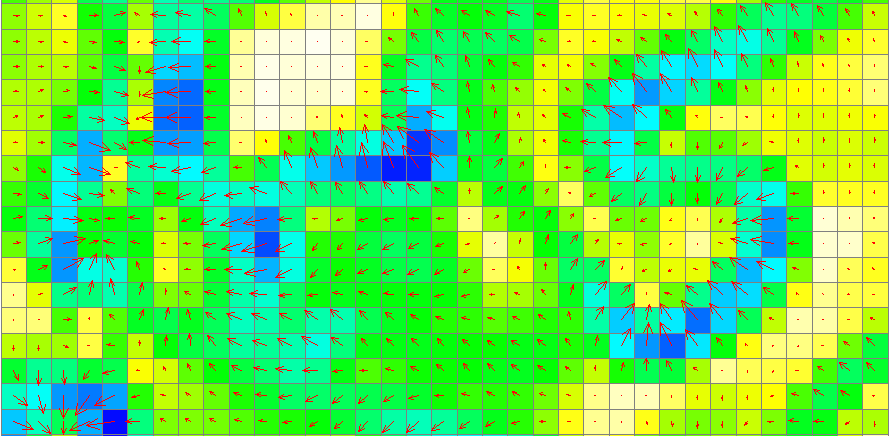

Geomorphometry II:
Basic topographic analysis
Helena Mitasova
Outline (learning objectives)
- summary parameters: volumes, surface areas
- first and second order point parameters
- methods for slope, aspect and curvatures using polynomial and spline approximation
- computing parameters from noisy data, level of detail
- combining parameters to map landforms and terrain features
Terrain surface parameters
- Derived from discrete representation of $z=f(x,y)$
- Summary parameters
quantify property for entire surface or its subregion: volume, surface area, fractal dimension, roughness
- Point geometry parameters quantify geometry at each point of the surface: gradient, curvatures
- Process-based parameters quantify cumulative results of processes (flow, solar radiation, wetness)
Volume estimation
- Volume - integral approximated as sum of cuboids:
$$
V=∑dx.dy.dz = dx.dy ∑ dz
$$
- where $dx.dy$ is grid cell area, $dz = z_0-z_i$, is cell value difference, $z_0$ is constant, plane or curved surface
- computed as sum of grid cell values
- can be applied as global or zonal metrics

Surface area
- sum of 3D triangle areas, depending on the direction of the diagonal: minimum and maximum surface
- alternative: 8 triangles connecting grid center with neighboring ones
- larger than 2D area

Point topographic parameters
Measure geometric properties at any point of the topographic surface
- steepness, orientation, and shape
- derivation based on differential geometry
- computed from raster DEM using elevation differencing
- computed directly from scattered points using interpolation function with suitable properties
Elevation surface gradient
Given a surface $z = f(x,y)$, where $f(x,y)$ is a continuous bivariate function,
we can define a gradient:
$$
\nabla z = ({\partial z \over \partial x}, {\partial z \over \partial y}) = (f_x,f_y)
$$
where $f_x$ and $f_y$ are first order partial derivatives of $f(x,y)$
vector field that represents the maximum rate of change in elevation
and points in the direction of this change
What is partial derivative and a
formal definition and
why it is direction of steepest ascent
Gradient vector field
$$
\nabla z = - (f_x,f_y)
$$
gradient vectors are perpendicular to contours
Steepest slope angle
Given the surface gradient $\nabla z = (f_x,f_y)$,
the steepest slope magnitude $s[\%]$ is the gradient vector magnitude
$$ s = 100 \sqrt {f_x^2 + f_y^2} $$
and the steepest slope angle $\gamma$ is
$$ \tan \gamma = \sqrt{f_x^2 + f_y^2} $$
- angle between horizontal plane and surface tangent,
- rise over run in direction of max elevation change
keep in mind that
$$ (f_x,f_y)=({\partial z \over \partial x}, {\partial z \over \partial y})$$
Steepest slope angle map
$$ \gamma = \arctan \sqrt {f_x^2 + f_y^2} $$

- values range between 0 - 90 degrees
- controls flow velocity and sun inclination angle
Aspect angle
Steepest slope direction angle is given by the direction of gradient vector
$$ \tan \alpha = {f_y \over f_x} $$
- values range between 0 - 360 degrees
- signs of $f_x, f_y$ need to be taken into account to determine the angle in relation to
the 0 deg direction (E or N)
- measures hillslope orientation
- controls flow direction and sun inclination angle
when only $f_x = 0, \tan \alpha = \inf$ and $\alpha = 90 \deg$, but when $f_x = f_y = 0$ then $\alpha$ is undefined
Aspect angle map
$$ \tan \alpha = f_y / f_x $$
Slope angle in a given direction
Slope $\gamma_t$ measured at a direction $\alpha_t$ id given as:
$$ \gamma_t = \gamma \cos(\alpha - \alpha_t) $$
- where $\gamma$ is the steepest slope angle.
- $\alpha$ is the steepest slope direction
Slope angle $\gamma_t$ is always smaller than $\gamma$
add diagram
Directional derivative: ${\partial z \over \partial s} = f_x \cos \alpha_t + f_y \sin \alpha_t$
Slope angle in a road direction
Slope along the road , versus steepest slope angle
Slope and aspect from DEM
Given a matrix of elevation values - a DEM, estimate slope and aspect:
- Steepest elevation difference: D8 approach
- Polynomial approximation on 3x3 neighborhood, many versions using second order polynomials
- Spline approximation on raster or directly from point data
Slope and aspect from DEM
Polynomial approximation on 3x3 moving window:
$$ z(x,y)=a_0+a_1 x + a_2 y + a_3 xy + a_4 x^2 + a_5 y^2 $$
- we can write 9 equations to solve for $a_i$ parameters
- more equations than needed - we use weighted least squares to fit the polynomial to the 9 grid points
- the solution leads to - ADD
window image
Slope and aspect from DEM
After substitution for $a_i$ we get
$$
f_x = {{(z_{i-1,j-1} - z_{i+1,j-1}) + 2(z_{i-1,j} - z_{i+1,j}) + (z_{i-1,j+1} -z_{i+1,j+1})} \over {8 \Delta x}}
$$
$$
f_y = {{(z_{i-1,j-1} - z_{i-1,j+1}) + 2(z_{i,j-1} - z_{i,j+1}) + (z_{i+1,j-1} -z_{i+1,j+1})} \over {8 \Delta y}}
$$
Then slope and aspect is $ \tan \gamma = \sqrt{f_x^2 + f_y^2}, \tan \alpha = f_y / f_x$
window image
Steepest slope and aspect: DEM
Slope and aspect derived from a 10m resolution DTM
Slope and aspect: integer DEM
Impact of integer elevation values in meters on slope pattern
and a slope and aspect histograms
Computing slope and aspect from points
Given a set of scattered points, estimate slope and aspect:
- Spline approximation on raster or directly from point data
Steepest slope and aspect: DSM
Slope and aspect derived from lidar 1st return point cloud using RST method
(smoothing spline with tension)
Surface curvatures
Curvature at a point: inverse of the radius of a circle tangent to the surface at this point in a given direction [m-1]
Convex, concave, high value - smaller circle
Surface curvatures
- In general, surface has different curvatures in different directions
- Principal directions have max and min curvatures, gaussian and mean are function of principal curvatures
- Geomorphometric curvatures: profile, tangential / plan
Learn more
Find more examples in the 2014 lecture, MEA592-004/GIS595-002:
Multidimensional Geospatial Modeling material and GIS595 UAS course